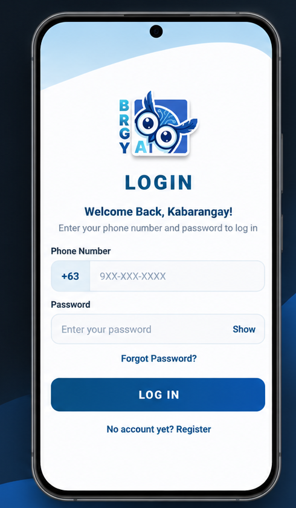

Microsoft Azure
Compute, storage, identity, governance, monitoring, and core cloud services.
I'm an IT student at Universidad de Manila, building practical skills in Microsoft Azure, cloud infrastructure, and networking through academic labs and independent study. I also bring experience in manual software testing from an academic capstone project.

My goal is to grow into a cloud engineering role by building technical fundamentals and applying them through practical projects.
I'm currently studying Information Technology at Universidad de Manila. My main interest is cloud engineering, particularly how cloud environments are configured, secured, monitored, and maintained.
In cloud computing coursework, I deployed a Windows virtual machine, configured IIS web hosting, and built an Azure Automation workflow for VM shutdown. I am seeking opportunities to deepen my infrastructure and IT operations experience.
Through our BRGY-AI capstone, I also contributed to manual application testing and test case documentation. That experience helped me appreciate the importance of structured testing and reliable systems.
Azure services, infrastructure and operations.
Connectivity, addressing, security and troubleshooting.
Documentation and actual academic project testing.
Alongside studying cloud concepts and networking, I completed two Microsoft Azure labs as part of my coursework. Both were created using a free trial; the cloud resources were deleted after the activities.
Compute, storage, identity, governance, monitoring, and core cloud services.
Virtual networks, subnets, NSGs, private access, and connectivity fundamentals.
Access control, resource organization, cloud monitoring, and cost awareness.
These are hands-on coursework activities I completed, not live production systems.
Deployed a Windows virtual machine in Microsoft Azure, connected using Remote Desktop, installed the IIS Web Server role, and hosted a static HTML/CSS website accessible through the VM's public IP address.
Completed in 2026 · Academic lab with an output screenshot documented on GitHub.
Created an Azure Automation Account and imported a graphical runbook. Configured a one-time shutdown schedule and successfully tested the runbook, which stopped and deallocated the virtual machine.
Completed in 2026 · Runbook test and VM status screenshots documented on GitHub.
Deployment status: Both labs were completed using an Azure free trial. The virtual machines and other trial resources are no longer running. The activities are documented on GitHub with screenshots of their results.
My academic QA contribution is a practical example of how I approach testing and documentation.

BRGY-AI login screenA retrieval-augmented generation (RAG) legal information and document assistance application designed for Barangay 134. It aims to help residents navigate basic legal information and document-related processes.
My contribution
Cloud and networking are my learning priorities. My QA experience comes from academic project work.
Foundational knowledge and continuing study
Applied in BRGY-AI academic testing
Academic and portfolio development
Completed training and certification progress supporting my journey toward cloud engineering.
22-hour course covering networking concepts, network types and media, protocol standards, IPv4 addressing, wireless access, and application-layer services.
View Certificate (PDF)Cloud concepts, Azure architecture and services, and Azure management and governance.
Review my education, Microsoft Azure academic labs, technical skills, certifications and training, and work experience.
I'm interested in internship opportunities where I can learn from experienced teams and contribute to cloud infrastructure, IT operations, or other technology projects.